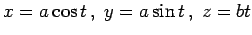

Inhalt Index DeskTop Bronstein

 Integralrechnung Kurvenintegrale Kurvenintegrale allgemeiner Art
Integralrechnung Kurvenintegrale Kurvenintegrale allgemeiner Art


| (8.119) |
Für den Fall dreier Veränderlicher gelten analoge Formeln.
| (8.120) |
Für den Fall dreier Veränderlicher gelten analoge Formeln.
| (8.121) |

Für den Fall dreier Veränderlicher gelten analoge Formeln.
| Beispiel A |
|
, wobei K ein Gang der Schraubenlinie  von t0 bis ist. |
| Beispiel B |
|
, wobei K ein Bogen der Parabel y2 = 9x zwischen den Punkten A(0,0) und B(1,3) ist: . |